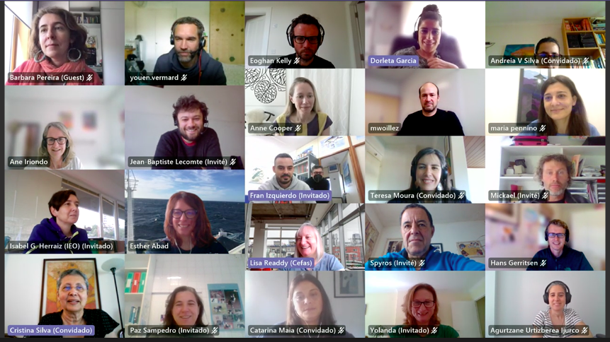
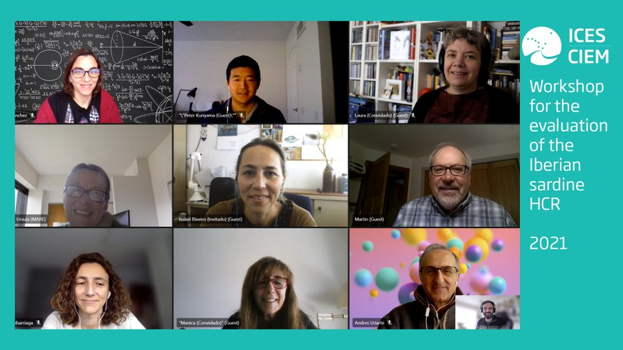
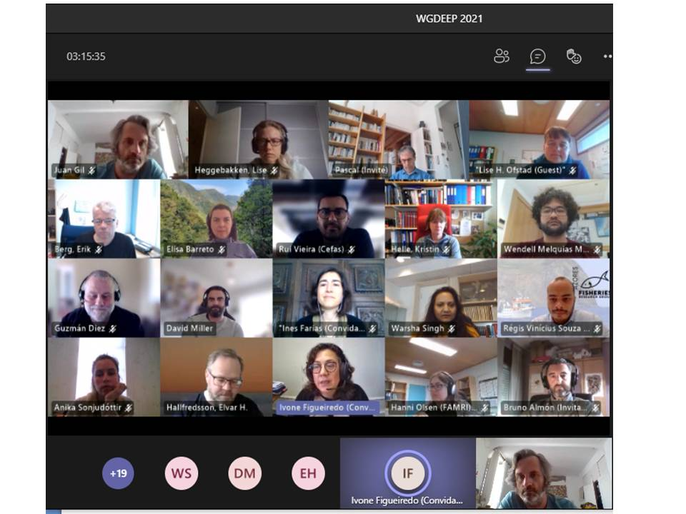
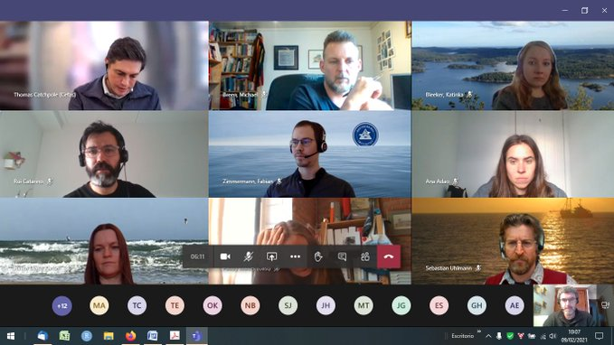
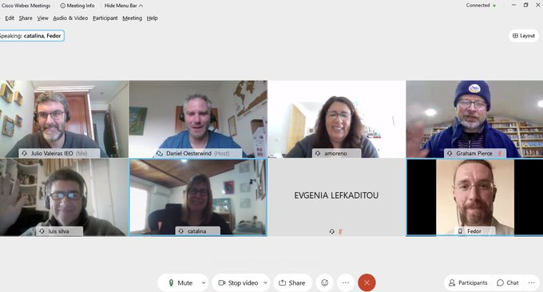
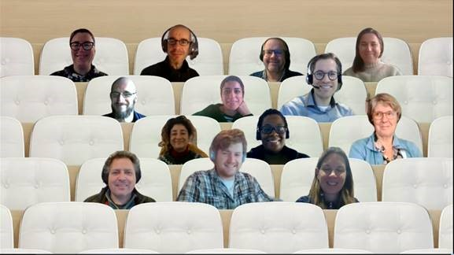
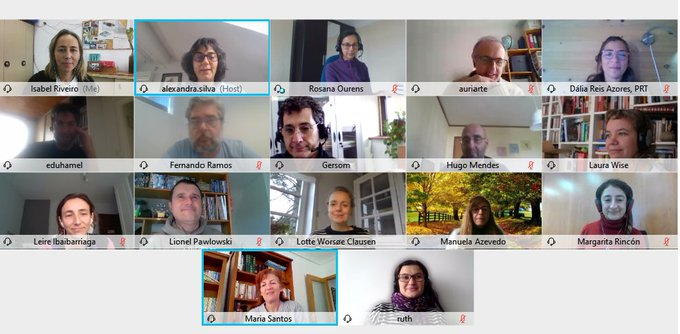
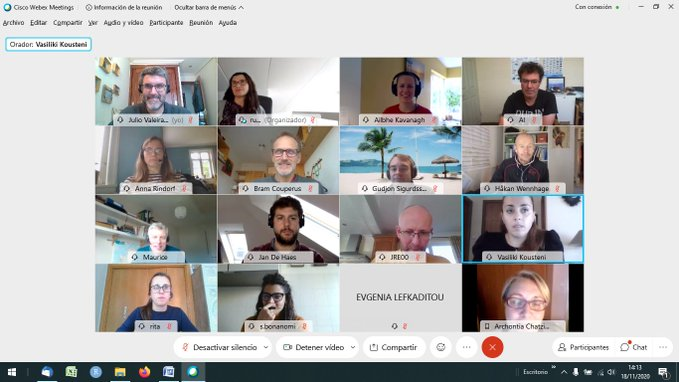
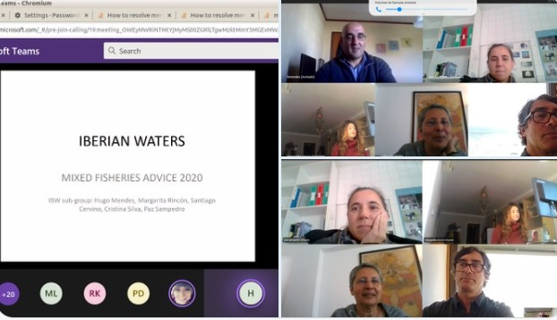
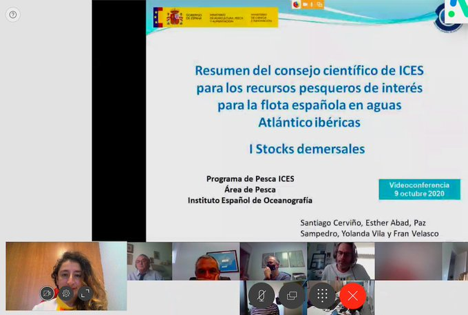

EVALICES Project
The EVALICES Project, as a structural project of the IEO (Instituto Español de Oceanografía),
addresses the assessment of the marine resources, both demersal and
pelagic, exploited by Spanish fleets in waters of the International Council for the Exploration of the
Sea (ICES). More precisily, EVALICES will address the integrated assessment of the
marine living resources, in the framework of the ecosystem approach to fisheries, the precautionary
principle and with the objective of Maximum Sustainable Yield, all of them considered within both
the European Common Fisheries Policy and within the Spanish regulations.
The final objective of the EVALICES is to contribute as much as possible, within the international
context, to achieve better assessments and, therefore, a better advice for the management of fishery
resources and their ecosystem.
The advice includes requests from administrations, national and regional (mainly on technical
measures) and international (management plans, TACs, etc.). The yearly advice about TACs covers
a fundamental part of EVALICES work and follows a well established process defined by the
ICES calendar.
Combining research and advice is one of the main challenges of this stage of EVALICES and to be
able to successfully tackle it, it is necessary to insist on the continuous training and the team
improvement with the incorporation of new members that complement it in those less developed
aspects allowing to expand our capacities to address the challenges of the future
Members
M. R. Domínguez Petit
rosario.dominguez@ieo.es

I. González Herraiz
Isabel.herraiz@ieo.esC. Rodríguez-Cabello
cristina.cabello@ieo.es
J. Gil Herrera
juan.gil@ieo.esJ. Otero Villar
jaime.otero@ieo.esM. I. Riveiro
isabel.riveiro@ieo.esF. Ramos Modrego
fernando.ramos@ieo.esNews
-
Working Group on Southern Horse Mackerel, Anchovy, and Sardine (WGHANSA) (26/05/2021)
This week the WGHANSA working group (ICES Working Group on Southern Horse Mackerel, Anchovy, and Sardine) meets. It evaluates populations of horse mackerel from the south (from Fisterra to the south), Iberian sardines and anchovy division 9a. Our colleagues Isabel Riveiro, Gersom Costas, Margarita Rincón and Fernando Ramos have participated.
-
Working Group for the Bay of Biscay and the Iberian Waters Ecoregion (WGBIE) (12/05/2021)
We are evaluating 23 stocks (anglerfishes, megrims, hake, nephrops, pollack and sole stocks) in the Bay of Biscay and the Iberian Waters Ecoregion in the WGBIE.
 -
Managing the Iberian sardine (07/05/2021)
The last week our Impress members re-examine the Iberian sardine new Havest Control Rule (HCR) proposed by Portugal and Spain.
 -
Working Group on Biology and Assessment of Deep-sea fisheries resources (WGDEEP) (30/04/2021)
Our s member Juan Gil Herrera participated to the ICES Working Group on Biology and Assessment of Deep-sea fisheries resources (WGDEEP) this week! Always trying to improve stock Assessment results for the deep-sea fisheries resources.
 -
Workshop on the Inclusion of Discard and Survival in Stock Assessments (09/02/2021)
Our members are attending to the Workshop on the Inclusion of Discard and Survival in Stock Assessments (WKSURVIVE). The aim is to achieve new methods with a collaboration between experts in stock assessment and experts in assessing discard survival landing obligation. -
Working Group on Cephalopod Fisheries and Life History (23/01/2021)
This week we are attending to the Working Group on Cephalopod Fisheries and Life History (WGCEPH) planning the 2021 activities. -
Workshop on Tools and Development of Stock Assessment Models Using a4a and Stock Synthesis (19/01/2021)
This week we are attending the Workshop on Tools and Development of Stock Assessment Models Using a4a and Stock Synthesis (WKTADSA) trying to improve Stock Assessment Models for Iberian Atlantic stocks. -
ICES
TAF Reporting Workshop WKREPTAF (14/01/2021)
We are attending to ICES TAF Reporting Workshop (WKREPTAF), recognising the importance of reproducible and transparency research in Stock Assessment.
-
Working Group on Southern Horse Mackerel, Anchovy, and Sardine (27/11/2020)
This week impress members are participating in the WGHANSA (Working Group on Southern Horse Mackerel, Anchovy, and Sardine) which is in charge of assessing the status of and providing short-term predictions for several populations of Small Pelagic Fishes inhabiting the southwestern European waters. -
Workshop on Fish of Conservation and Bycatch Relevance (18/11/2020)
This week our member J. Valeiras Mota is attending to ICES WGs WKCOFIBYC on Fish of Conservation and Bycatch Relevance. Working hard on a list of Bycatch and species of conservation concern (threatened, sensitive, etc) that should be included in future assessments.
 -
Mixed Fisheries advice in the Iberian waters (30/10/2020)
This has been an intense week for some members working on the Mixed Fisheries advice in the Iberian waters and attending several ICES WGs (WGMIXFISH and WKSPICT) trying to improve the scientific advice of the Iberian Atlantic resources.
 -
ICES WKLIFE (09/10/2020)
Until recently, fisheries science was unable to inform decision-makers on the status and potential of data-limited fish stocks because we lacked suitable assessment methods. Since 2010, ICES WKLIFE has turned this picture around. Website.
Santiago Cerviño and M. Grazia Pennino have been participated in ICES WKLIFE.
-
Scientific advices of the Iberian Atlantic resources (09/10/2020)
Impress project members presented the scientific advices of the Iberian Atlantic resources to the Spanish General Secretariat for Fisheries!Keep working to improving Stocks Assessment and Communication between managers and stakeholders.

-
Mixed Fisheries advice in the Iberian waters (30/10/2020)
This has been an intense week for some members working on the Mixed Fisheries advice in the Iberian waters and attending several ICES WGs (WGMIXFISH and WKSPICT) trying to improve the scientific advice of the Iberian Atlantic resources.

-
ICES WKLIFE (09/10/2020)
Until recently, fisheries science was unable to inform decision-makers on the status and potential of data-limited fish stocks because we lacked suitable assessment methods. Since 2010, ICES WKLIFE has turned this picture around. Website.
Santiago Cerviño and M. Grazia Pennino have been participated in ICES WKLIFE.
-
Scientific advices of the Iberian Atlantic resources (09/10/2020)
Impress project members presented the scientific advices of the Iberian Atlantic resources to the Spanish General Secretariat for Fisheries!Keep working to improving Stocks Assessment and Communication between managers and stakeholders.
 -
Meeting of EVALICES Project (27/12/2018)